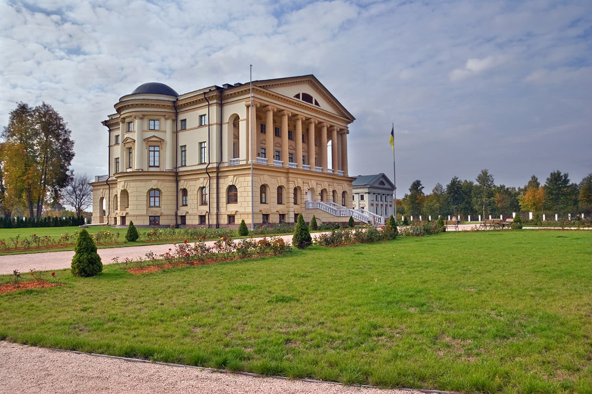

Кісіль Сергій Володимирович
Місце народження: 2 червня, 2003 року, с. Капустине (Черкаська обл.)
Освіта: Шполянська ЗОШ 1-3 ст, м. Шпола; НТУУ "КПІ", м. Київ
Хоббі:
- Настільний тенніс
- Куховарство
- Перегляд фільмів
- Прослуховування музики
- Комп'ютерні ігри
Улюблені фільми:
- Пірати Карибського моря
- Гарря Потер
- Люди в чорному
Бату́рин — місто Бахмацького району Чернігівської області (Україна), на річці Сейм (басейн Дніпра), за 23 км на пн. сх. від залізничної станції Бахмач-Пасажирський. Статус міста надано 2008 року. Перші письмові згадки про Батурин датуються 1625-им роком. Понад три століття тому був він столицею Лівобережної України – свідком багатьох політичних інтриг, військових звитяг і трагедій. Ще 1669 р. гетьман Дем’ян Многогрішний вибрав Батурин за свою резиденцію, потім звідси правив Україною Іван Самойлович, з 1672 по 1708 рік — Іван Мазепа, а з 1750-64 рр. – останній гетьман України К. Разумовський. Ось тому і називають Батурин гетьманською столицею.
